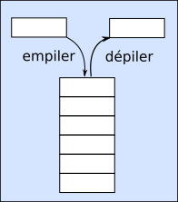
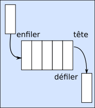
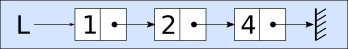

Structure de données#
Type de données#
Les données ont un type défini par le langage de programmation. On a les types simples comme: - les nombres entiers sont de type int pour integer (entier); - les nombres flottants représentant les nombres réels sont de type float; - les chaines de caractères, notées entre les simples ou doubles quote (guillemets) sont de type string; - les booléens qui prennent 2 valeurs : True, False ou alors 0, 1.
Certains types de données sont plus complexes, rassemble plusieurs données dans une même structure. Par exemple: - les tableaux ou listes (en python) de type list; - les dictionnaires (ou tableaux associatifs) qui sont de type dict
Des opérations sur les types de données sont définies. - Pour les types int et float, on a les 4 opérations mathématiques. - Pour les chaines de caratères, on a la concaténation, les opérations d’encodage, la mise en forme, etc. - Pour les booléens, on a les opérations logiques and, or et not.
Pour les types structurés comme les les listes et les dictionnaires, on dispose de méthodes (fonctions) qui permettent d’agir sur les données qu’elles contiennent.
En python, les listes et les dictionnaires disposent des méthodes de suppression, d’ajout, d’accès à une valeur souhaitée, etc.
L’ensemble de ces méthodes constitue l’interface de la structure de données.
Ces types et structures de données sont complétés par des structures de données construits pour répondre à des problématiques particulières. Nous allons en étudier plusieurs comme la pile, la file et les listes chainées.
La pile#
Une pile est une structure de données pour laquelle on accède uniquement au dernier élément ajouté nommé sommet de la pile. Cette structure de donnée est dite LIFO pour Last In First Out (premier arrivé, dernier sorti).
On représente souvent une pile de façon verticale comme une pile d’assiettes.

Interface d’une pile#
L’interface d’une pile se compose principalement des méthodes suivantes : - Créer une pile vide, sans contenu; - Empiler une pile c’est à dire ajouter un nouvel élément au sommet de la pile; - Dépiler une pile c’est à dire renvoyer le sommet de la pile en le supprimant de la pile;
On y ajoute parfois les méthodes suivantes: - Tester si une pile est vide; - Accéder au sommet de la pile (sans dépiler), c’est à dire renvoyer la valeur du sommet de la pile sans le supprimer; - Connaitre le nombre d’éléments d’une pile appelée hauteur de la pile; - Afficher le contenu d’une pile avec print ou une méthode dédiée.
Implémentation d’une pile#
L’implémentation d’une pile peut se réaliser de différentes manières en python. La pile n’existe pas nativement dans le langage. Par contre, quel que soit l’implémentation choisie pour une pile, l’interface reste la seule définition de la pile.
Les listes pythons disposent de fonctions et de méthodes pour réaliser l’interface d’une pile. On peut programmer un script en python regroupant les différentes méthodes et fonctions qui réalisent l’interface d’une pile.
Exercice#
Cet exercice doit être cherché sur feuille avant de le programmer en python
On considère une pile P contenant dans cet ordre les nombres entiers 17, 9, 12 et 8; Le nombre 17 est le sommet de la pile.
On définit l’interface de la pile avec les fonctions suivantes : - Créer_pile() qui crée une pile vide; - Empiler(valeur) qui ajoute une valeur au sommet de la pile; - Dépiler() qui supprime le sommet de la pile en renvoyant sa valeur; - Pile_vide() qui teste si la pile est vide.
On pourra afficher le contenu de la pile avec print.
Représenter cette pile P par un schéma.
On empile la valeur 31. Quel est le contenu de la pile P ?
On dépile la pile P. Quel est son contenu ?
Écrire, en python la suite d’instructions qui permet de créer la pile P.
Écrire un algorithme qui dépile la pile P tant qu’elle n’est pas vide.
[ ]:
"""
Pour importer le module Pile, il faut récupérer le fichier pile.py et l'installer dans le même répertoire
que votre fichier python ou notebook jupyter.
Ensuite, l'import se fait avec la commande:
from pile import *
"""
La file#
Une file est une structure de données pour laquelle on accède uniquement au premier élément ajouté nommé tête de file. Une file est une structure dite FIFO signifiant FIRST IN, FIRST OUT se traduisant par premier arrivé, premier sorti.
On représente souvent une file de façon horizontale comme une file d’attente.

Interface#
L’interface d’une file se compose principalement des méthodes suivantes: - Créer une file vide, c’est à dire sans contenu; - Enfiler une file c’est à dire ajouter un nouvel élément dans la file; - Défiler une file, c’est à dire retirer un élément de la file en récupérant sa valeur.
On y ajoute parfois les fonctions suivantes: - Tester si une file est vide; - Aaccéder à la tête de la file (sans défiler), c’est à dire sans supprimer l’élément; - Connaitre le nombre d’éléments d’une file appelée longueur de la file; - Afficher le contenu d’une file avec print ou une méthode dédiée.
Implémentation#
Comme pour les piles, les méthodes et les fonctions sur les listes python permettent de réaliser l’interface d’une file avec les listes python. On peut également programmer un script qui réalise l’interface d’une file.
Exercice#
On considère une file F contenant dans l’ordre les nombres 1, 11, 111 et 1111; le nombre 1 est la tête de la file.
On définit l’interface de la file avec les fonctions et méthodes suivantes : - Créer_file() qui crée une file vide : F = creer_file() - Enfiler(valeur) qui ajoute une valeur à la file : F.enfiler(1) - Défiler() qui supprime la tête de la file en renvoyant sa valeur : F.defiler() - Est_vide() qui teste si la file est vide : F.est_vide() qui renvoie vrai ici.
Représenter par un schéma la file F.
On enfile la valeur 11111. Quel est le contenu de la file F ?
On défile la file F. Quel est son contenu ?
Écrire la suite d’instructions qui permet de créer la file F.
Écrire un algorithme qui défile la file F tant qu’elle n’est pas vide.
Liste chainée#
La liste chainée ne doit pas être confondue avec la liste python (associée à un tableau dynamique). La liste chainée est une structure de données qui lie ses éléments comme les maillons d’une chaine. Chaque maillon a une valeur et en même temps se trouve relié au maillon suivant.

En python, les listes chainées n’existent pas nativement. Pour utiliser une telle structure de donnée, on doit écrire un script python qui réalise son interface.
Interface#
L’interface d’une liste chainée se compose: - d’une liste vide qu’on notera nil; - d’un test qui indique si la liste est vide; - d’un accès au premier élément de la liste, historiquement appelé car (langage LISP); ce premier élément pourra être désigné par tête; - d’un accès à la liste obtenue à partir de la liste initiale sans son premier élément; cette liste, historiquement appelée cdr (langage LISP), sera appelé queue; - d’un constructeur qui est une fonction permettant la création d’une liste chainée ; ce constructeur sera nommé cons
D’autres méthodes ou fonctions peuvent compléter l’interface, comme: - la concaténation de deux listes chainées (relier deux listes chainées entre elles); - la recherche d’un élément dans une liste chainée. - l’insertion d’un élément dans la liste chainée; - la longueur d’une liste chainée.
Ces fonctions supplémentaires feront l’objet d’un exercice.
Implémentation#
L’implémentation d’une liste chainée en Python nécessite l’écriture d’un script qui réalise l’interface. Nous utiliserons un tel script pour manipuler les listes chainées.
Exercice#
On reprend la liste chainée donnée en exemple:
Cette liste est constituée de trois cellules (maillons) repésentées par des rectangles. Chaque cellule se compose de 2 parties: - la tête (car) qui est une valeur; - la queue (sdr) qui est un pointeur vers une autre liste.
Vers quelle liste pointe la dernière cellule ?
Le constructeur cons d’une liste prend 2 arguments : la tête et la queue. Comment peut-on construire, avec ce constructeur, la liste constituée par la dernière cellule de notre liste chainée ?
En remontant la liste chainée, écrire la construction de la liste chainée avec le constructeur cons.
Comment ajouter le nombre 0 au début de cette liste chainée ?
Solution#
La dernière cellule est composée de deux parties. La tête qui vaut ici 4 et la queue qui pointe vers la liste vide notée nil.
La dernière cellule (non vide) de notre liste est elle-même une liste chainée. Notre constructeur cons prend en argument une tête et une queue, donc la dernière cellule sera construite avec l’instruction
cons(4,nil).En remontant la liste chainée, sa construction sera obtenue avec l’instruction :
cons(1, cons(2, cons(4, nil))).Il y a plusieurs façons d’ajouter le nombre 0 à cette liste chainée:
en reconstruisant toute la liste :
cons(0, cons(1, cons(2, cons(4, nil))));en affectant à la variable L notre liste chainée et en utilisant le constructeur :
L = cons(1, cons(2, cons(4, nil)))
L = cons(0, L)
from pile import *
# ou
from pile import Pile, maillon, creer_pile
[5]:
from pile import Pile, maillon, creer_pile
P=creer_pile()
P.empiler(5)
P.empiler(3)
P.empiler(8)
print(P)
x=P.depiler()
print(P,x)
|5|3|8|
|5|3| 8
[3]:
from liste_chaine import *
L=cons(1,cons(2,cons(4,nil)))
print(L)
1->2->4->nil
Application : tri d’une liste avec une pile#
Supposons que l’on souhaite trier une suite de nombres. Il existe de nombreuses méthodes de tris, plus ou moins efficace. Python dispose d’une méthode de tri adaptée à sa structure de liste. Cette méthode est sort et s’applique aux listes. La liste est modifiée.
[6]:
L=[5,9,1,7,3,4,8,2]
L.sort()
L
[6]:
[1, 2, 3, 4, 5, 7, 8, 9]
La même liste peut être triée avec différents algorithmes: - le tri par sélection - le tri par insertion
Le tri par insertion#
Le principe du tri par insertion d’un tableau de nombres consiste à insérer un nombre dans une partie déjà triée. On suppose que l’on effectue un tri par ordre croissant.
Le tableau est partagé en deux parties; la première partie est triée, la seconde n’est pas encore triée.
soit i l’indice du premier élément de la partie non triée ; on compare cet élément avec les éléments de la partie triée. Tant que les éléments de la partie triée sont supérieurs à l’élément d’indice i, ceux-ci sont décalés de 1 rang (vers la droite).
Il y a alors une place de libre dans la partie triée dans laquelle est placé l’élément d’indice i.
On donne un script python réalisant le tri par insertion.
[10]:
L=[15,4,19,8,11]
def tri_par_insertion(liste):
print(liste)
for i in range(1,len(liste)):
x=liste[i]
j=i-1
while j>=0 and liste[j]>x:
liste[i]=liste[j]
i = j
j -= 1
liste[i]=x
print(liste)
return liste
tri_par_insertion(L)
[15, 4, 19, 8, 11]
[4, 15, 19, 8, 11]
[4, 15, 19, 8, 11]
[4, 8, 15, 19, 11]
[4, 8, 11, 15, 19]
[10]:
[4, 8, 11, 15, 19]
[1]:
from pile import *
[2]:
L=[15,4,19,8,11,7,13,11,10,5,3,19]
def tri_par_insertion(liste):
print(liste)
P=creer_pile()
for i in range(1,len(liste)):
j=i-1
while j>=0 and liste[j]>liste[i]:
P.empiler(liste[j])
j -= 1
P.empiler(liste[i])
print(P)
while not P.est_vide():
j +=1
liste[j]=P.depiler()
print(liste)
return liste
tri_par_insertion(L)
[15, 4, 19, 8, 11, 7, 13, 11, 10, 5, 3, 19]
|15|4|
[4, 15, 19, 8, 11, 7, 13, 11, 10, 5, 3, 19]
|19|
[4, 15, 19, 8, 11, 7, 13, 11, 10, 5, 3, 19]
|19|15|8|
[4, 8, 15, 19, 11, 7, 13, 11, 10, 5, 3, 19]
|19|15|11|
[4, 8, 11, 15, 19, 7, 13, 11, 10, 5, 3, 19]
|19|15|11|8|7|
[4, 7, 8, 11, 15, 19, 13, 11, 10, 5, 3, 19]
|19|15|13|
[4, 7, 8, 11, 13, 15, 19, 11, 10, 5, 3, 19]
|19|15|13|11|
[4, 7, 8, 11, 11, 13, 15, 19, 10, 5, 3, 19]
|19|15|13|11|11|10|
[4, 7, 8, 10, 11, 11, 13, 15, 19, 5, 3, 19]
|19|15|13|11|11|10|8|7|5|
[4, 5, 7, 8, 10, 11, 11, 13, 15, 19, 3, 19]
|19|15|13|11|11|10|8|7|5|4|3|
[3, 4, 5, 7, 8, 10, 11, 11, 13, 15, 19, 19]
|19|
[3, 4, 5, 7, 8, 10, 11, 11, 13, 15, 19, 19]
[2]:
[3, 4, 5, 7, 8, 10, 11, 11, 13, 15, 19, 19]
[11]:
P.empiler(3)
[12]:
print(P)
|3
[13]:
P.sommet.elt
[13]:
3
[ ]: